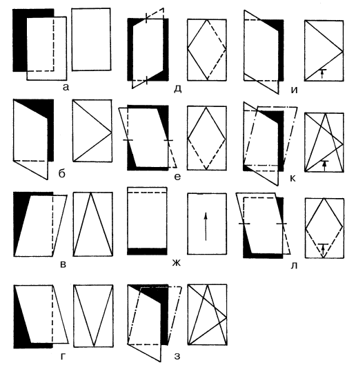
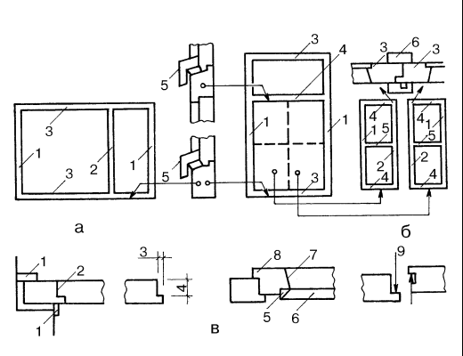
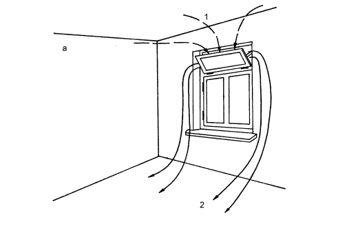
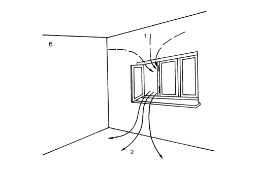

Классификация окон.

Для эстетической оценки сооружения расположение, разбивка и рисунок окон на фасаде здания играют решающую роль. Разнообразные эффекты возникают в результате акцентирования вертикального или горизонтального членения проемов, нейтрального или композиционно направленного распределения окон на стенах здания либо в результате более мелкого членения самих окон.
Органичные линии оконных переплетов вплетались в общий рисунок фасадов того времени, даря ощущение гармонии и покоя. И если глаза – это зеркало человеческой души, то окна дома – это отражение его внутреннего содержания. Если внешняя сторона входной двери, да и всего фасада при входе в дом забывается, то рисунок оконного переплета постоянно находится перед глазами.
В интерьере окно становится как бы рамой к картине мира, а ведь как часто из-за плохо подобранной рамы меркнет прекрасное произведение искусства. И, конечно же, нельзя не вспомнить о том, что окно подчас диктует стиль интерьера. В особенности это касается старых домов с искусно выполненной столяркой окон, которые сохранились до нашего времени и теперь украшают улицы наших городов, соперничая по красоте и, выигрывая в гармоничности у современных построек конца XX века, которым нужно отдать должное за их попытку переосмыслить наследие прошлых веков и создать новый стиль.
Окна нашего времени стали менее вычурными, но более практичными. Современные технологии дают возможность выбора между применяемыми деревянными блоками и новыми пластиковыми.
Сейчас в погоне за комфортом многие бросились заменять старые окна новыми. И, к большому сожалению, в прессе почти ни один архитектор не выступил в защиту цельности облика фасадов жилых многоквартирных домов.
Особенно больно смотреть на то, как уродуется лицо вполне презентабельных домов сталинского периода. Никто из специалистов фирм, производящих и устанавливающих новые оконные блоки взамен старых не считает нужным объяснить заказчику, что нельзя изменять рисунок оконных переплетов одной отдельно взятой квартиры. Дело в том, что в этом случае вскоре фасад такого дома превращается в «нищенскую рубаху» с разными по форме переплетов и цвету стекол окнами «заплатками».
По своим функциям окна сильно отличаются от дверей. Назначение окон состоит не столько в ограждении внутренних помещений от влияний внешней среды, сколько в регулировании этих влияний для создания внутреннего комфорта. Окна служат нам для проветривания, так как в большинстве современных многоквартирных домов не предусмотрена вентиляция жилых помещений.
Также через окна в комнаты попадают солнечные лучи, без которых в квартире будет не только темно, но и небезопасно для здоровья, так как солнечный свет (инсоляция) убивает болезнетворные микроорганизмы.
На заметку
Помимо всего хорошего окна создают проблему теплопотери в холодный период времени. Через окна теряется, как правило, значительно больше тепла, чем через поверхность наружных стен.
В зависимости от выбора конструкции остекления, материала обвязки переплетов и применяемых дополнительно различных приспособлений, таких как жалюзи и занавески, теплопотери, а значит и затраты на обогрев помещения могут значительно меняться.
Внимание
При одинарном остеклении теплопотери в холодное время года очень велики. При двойном остеклении между переплетами возникает воздушная прослойка, препятствующая утечке тепла.
Оптимальное расстояние между двумя стеклами составляет 40 мм, что достаточно редко соблюдается, в результате зимой на окнах с внутренней стороны появляется конденсат, который постепенно разрушает деревянный переплет.
Сегодня для теплозащиты применяют стеклопакеты, изготавливаемые из двух или более листов стекла, соединенных между собой уплотняющими профилями или сваркой фальцев. Пространство между листами стекла заполняют сухим воздухом или газами, благодаря этому появление конденсата исключается.
Через окна к нам, не считая света и тепла, попадают звуки, причем не всегда желательные. Одно дело, когда утром под окном звонко поют птицы, и совсем другое, когда слышен постоянный гул автострады.

Рис. 8. Открывание оконных створок:
а – выставляемая; б – распашная; в – откидная; г – подвесная с верхней подвеской: д – поворотная вокруг вертикальной оси; е – поворотная на горизонтальных осях (среднеподвесная); ж – раздвижная; з – поворотно-откидная; и – подъемно-распашная; к – подъемно-поворотно-откидная; л – подъемно-поворотная на горизонтальных осях
Звукоизоляционные свойства окон зависят от толщины стекла, расстояния между стеклами и наличия в пространстве стеклопакета звукоизолирующих газов. Силу шумового потока может также уменьшить и уплотнение стыков. Причем уплотняются не только притворы створок к коробам, но и стыки коробок со стенами, ставнями и подоконными досками.
По способу открывания окна делятся на:
• неоткрываемые;
• вертикальные распашные;
• горизонтальные распашные;
• комбинированные.
Неоткрываемые окнаможно мыть только с улицы, при установке таких окон следует заранее продумать иной, не через окно, способ вентиляции помещения.

Рис. 9. Важнейшие части и детали окон:
а – оконная коробка: 1 – вертикальные бруски; 2 – вертикальный импост; 3 – горизонтальные бруски (верхний и нижний); 4 – горизонтальный импост; 5 – отлив; б – створка: 1–2 – вертикальные бруски створки; 3 – вертикальные бруски притвора; 4 – горизонтальные бруски створки (нижний и верхний); 5 – раскладка; 6 – нащельники (внутренний и наружный); в – детали: 1 – наличник; 2 – четверть; 3 – ширина четверти; 4 – высота четверти; 5 – фальц под стекло: 6 – раскладка; 7 – фаска; 8 – наплав; 9 – четверть притвора (притвор)
Вертикальные распашные окна,вращающиеся вокруг вертикальной оси, чаще всего открываются внутрь, их легко мыть, они прекрасно выполняют функцию проветривания помещения.
Горизонтальные распашные окна,имеющие горизонтальную ось вращения, открываются внутрь.


Рис. 10. Циркуляция воздуха в окнах с поворотной форточкой:
а – верхней; б – нижней: 1 – теплый воздух; 2 – холодный воздух
Они обеспечивают хороший воздухообмен, но мыть их труднее. Такая конструкция встречается в виде форточек в старых зданиях. Открываются такие форточки сверху вниз.
Комбинированные окнаобъединяют в себе преимущества вертикальных и горизонтальных распашных окон. Весьма редко встречаются окна, створки которых вращаются вокруг обеих осей симметрии проема. По конструкции различают окна с одинарным, двойным и тройным остеклением. Окна с двойными тройным остеклением также делятся на окна со спаренными и раздельными переплетами.
Применяемое остекление также делится на обычное и стеклопакет.